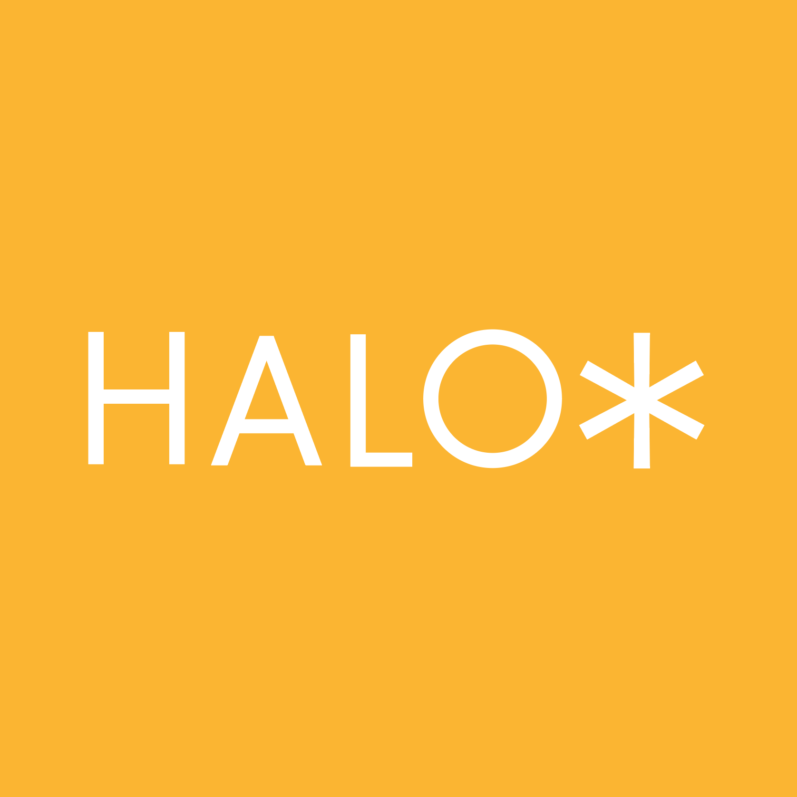

Strategic thinking.
Creative execution.
An independent, founder-led consultancy connecting business insight, brand identity and market expression.
Gina Ha.
From European technology exhibitions to brand strategy in Korea, my work has always centred on one question: how can a business make its real strengths visible to the people it needs to reach?
My experience spans international technology marketing, European exhibitions, brand strategy and creative production. HALO works across sectors and markets, combining strategic clarity with purposeful design.
HALO was founded in Bundang, South Korea, in April 2024 and has been based in Kingston upon Thames, United Kingdom, since March 2026.
Built between markets.
Grounded in execution.
Technology, made understandable.
My career in European technology marketing began with Samsung Techwin Europe, where I planned and delivered marketing communications and exhibitions for complex security technologies. The challenge was rarely a lack of product capability. It was helping buyers understand why that capability mattered in the real world.
From product features to market meaning.
Working across European channels, media, partners and exhibitions taught me to connect technical strengths to practical customer needs. Later, through Korean branding and consulting projects, I brought that discipline to positioning, identity, brochures, campaigns and customer experience.
Fluent in context, not only language.
Having lived and worked in the UK and Korea, I understand how expectations, decision-making and communication shift between markets. HALO supports Korean businesses speaking to UK and European audiences, as well as international brands looking for a clearer connection with Korean customers.
Why Brand Metacognition?
Business owners often know their products intimately. Their customers see only what the brand communicates. HALO’s method compares intended value, actual expression and market perception — then turns that gap into decisions teams can act on.
HALO is an independent, founder-led consultancy. Project delivery draws on specialist collaborators when the scope calls for them.
Original HALO.
Made visible.
Our visual identity is grounded in a simple graphic language, a warm yellow accent and confident typography.
